Scene Completion With Large-scale Image Data Set
CS 445 Final Project
Author: Xilun Jin (xjin12), Xin Wen (xinwen5), Xintong Wu (xwu68), Qile Zhi (qilezhi2)
OVERVIEW
Our project is based on Hays et al. 2008 paper Scene Completion Using Millions of Photographs. In this project, an image database with more than four hundred thousands photos will be set up, and the algorithm will be able to patch up the holes of an input image with images both structurally and semantically similar.
DATABASE SETUP
To download large sets of images online, the Flicker API is used. We select several categories of images based on keywords such as Chicago and lake. Since Flicker API limit to return only 400 images per API request, we handle this issue by making multiple API calls according to the date of images were uploaded. During the downloading process, we notice that with such large amount of data, it need more than half a month to download all the images. To boost the download speed, we design and implement a multithread downloader in Python. Also, to avoid having invalid or useless images, we prune out all the photos smaller than 800*600px or have an edge larger than 10000 px. Finally, we managed to download around 450,000 images in parallel within 30 hours and used these images as the pool for image completion which will be discussed in following sections.
After setting up a large image database. our algorithm will first select best semantically matching scenes and perform traditional template matching.
SEMANTIC SCENE MATCHING
In order to implement a perfect image completion and avoid long searching time, we need to find a group of candidate images that match the scenes in input image semantically. To find the semantically similar images, we used the GIST descriptor to model the images. GIST descriptor is described in Oliva et al. 2001 paper
Modeling the shape of the scene: a holistic representation of the spatial envelope. GIST is a low dimensional representation of an image, where some perceptual dimensions such as openness, roughness, expansion are considered. Images with scenes in the same categories will get close GIST descriptor.
We use a Python library called Lear GIST python, which implements the GIST descriptor in the paper.
First, we calculate the GIST descriptor for every image using multiprocess algorithm in our image database and store all in .npy files for fast read and write.
Second, we calculate a weighted GIST descriptor for the to-be-filled image with its mask for the hole. The GIST is weighted by the proportion of valid pixels(not in the hole) in every spatial bin.
Finally, we calculate the L1 distance between the GIST for the input image and the GIST for images in the database. We also calculate the SSD (Sum of Square Distance) between the input image and images in the database. Then we assign weights to these two attributes and pick 20 images that have smallest values as the input images for the next step
LOCAL CONTEXT MATCHING
We now have 20 semantically nearest scenes, and we can use our local template matching algorithm to find the best matchings. We further divide the steps into two: Seam Finding and Poisson Blending, inspired by previous Project 2 and Project 3.
We iterate the following process on each selected images:
Setup Input Image
When the program start, we can manually select the area to "erase", or input the incomplete image and its mask.Cut Seam Finding
To find the minimum cost path around the irregular border, we first find the smallest rectangle containing the inrregular hole, then add 80 to each four borders to get a larger rectangle as well and minus 80 to each borders to get a smaller rectangles. We regard the difference between the large and small rectangles (the width of the border is 160 in our case) as local context, i.e., the overlapping region of the existing and sampled patch.
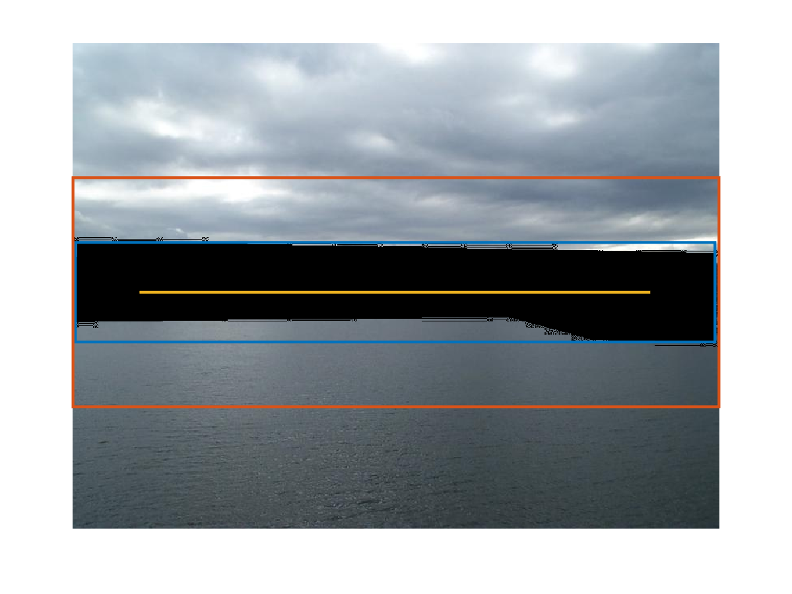
Note the blue rectangle is the smallest rectangle containing the inrregular hole. Our graph cut is performed between yellow rectangle and orange rectangle.
Take the top 160 * width region as example. We use the idea of buildErrpatch in Project 2, but add some modifications to satisfy the need of irregular shape. First, we calculate the SSD of two images on L*a*b color space instead of RGB color space. Since the region we need to cut contains part of holes, we changed the overlap region of hole and cut to Inf so that it won't be marked as cut edge. Then, we use cut to find the minimum cost path from the left to the right side of the patch, which defines a binary mask for the whole local context region.
We apply the above process to all four edges (top, bottom, left, right). Note that to find the cut for left and right region, we need to transpose the region first so that we can find the cutting path from top to the bottom side in the original region. We store the minimum cost for each time, and let the sum to be the total cut cost. Find the intersection of four masks.
Poisson Blending
After we get the mask, we use the standard poissonBlend by Project 3 on the whole image region to compose the image.
Note that different from Project 3 which allows the user to select mask region, our mask is computed by the cut, so there might be isolated pixels or regions with wierd border. Since Poission Blending is based on neighboring regions, before outputing mask in the process above, we smooth the mask a little bit.
We use the Poisson Blending formula to solve the blending constraints: 
Calculate Costs and Ranks
To calculate costs, we add up three scores: GIST distance, graph cut cost and Poisson blending cost. After writing 20 output images, storing costs and ranking from smallest to largest, we select the top 5 matches.
Sample OutputNo. 1 2005_10_13_31.jpg:
gistdist=0.072752
cutcost=8.921728
blendcost=1.555726
No. 2 2005_10_3_33.jpg: gistdist=0.056394 cutcost=140.355418 blendcost=8.606997 No. 3 2005_11_14_38.jpg: gistdist=0.039884 cutcost=35.207486 blendcost=3.811644 No. 4 2005_11_38_49.jpg: gistdist=0.085163 cutcost=7.682632 blendcost=2.521401 No. 5 2005_1_4_33.jpg: gistdist=0.092792 cutcost=356.132497 blendcost=6.827347
RESULT
Test Result 1


Test Result 2.1


Test Result 2.2


Test Result 3

 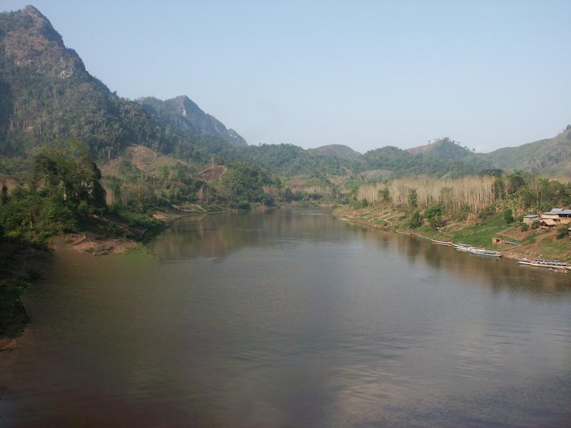
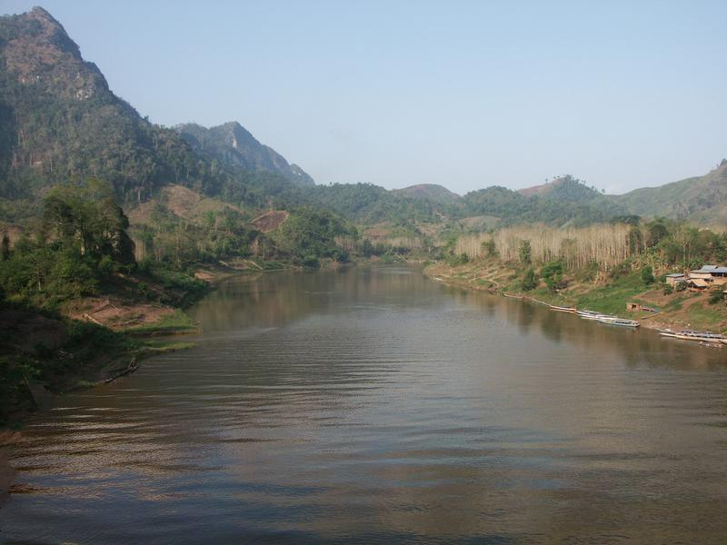
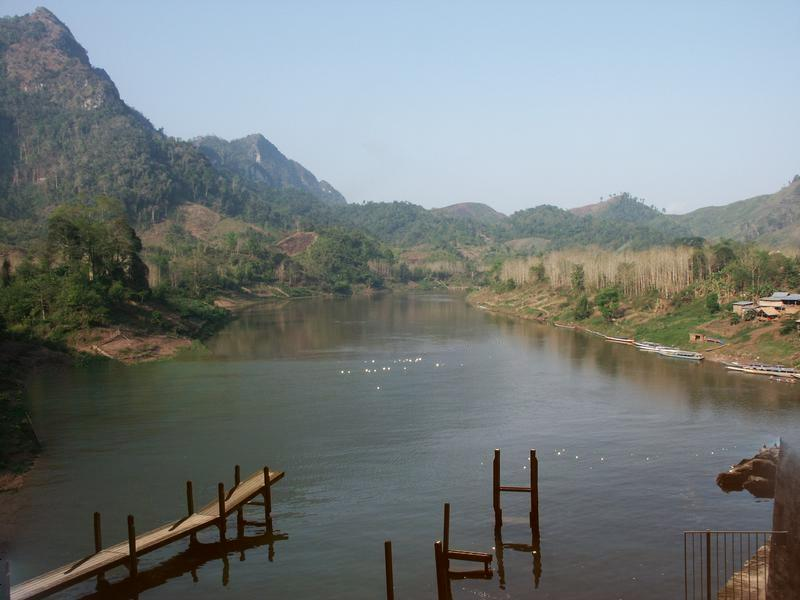
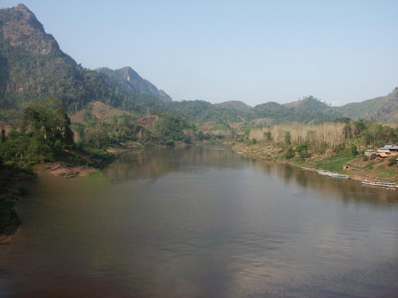
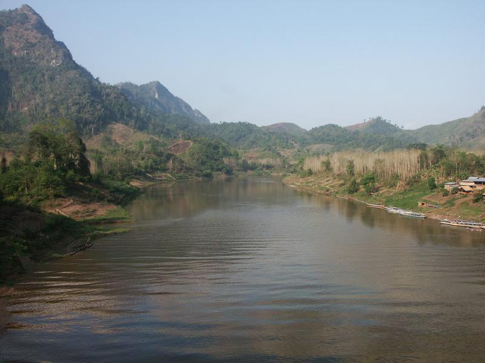
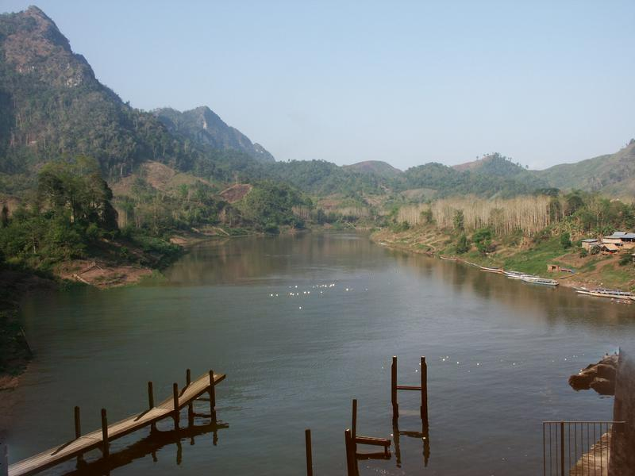
 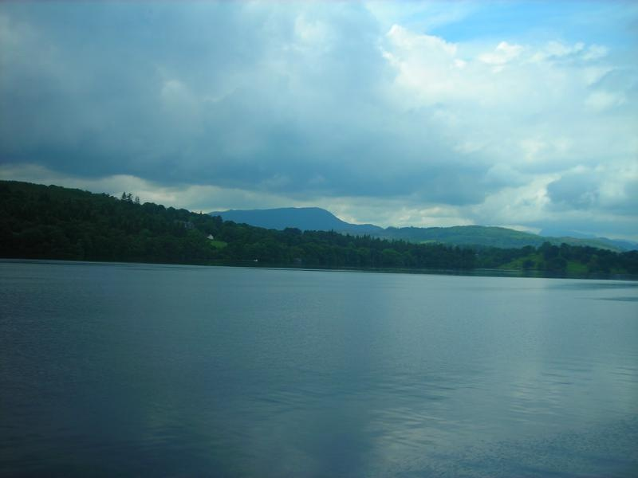
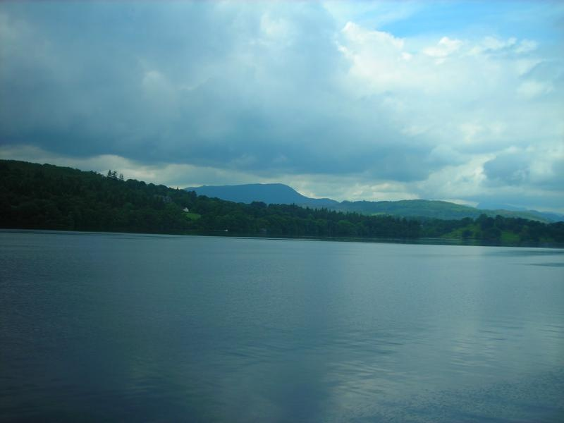
 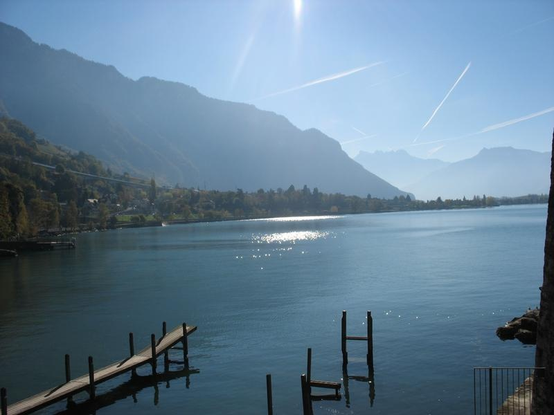
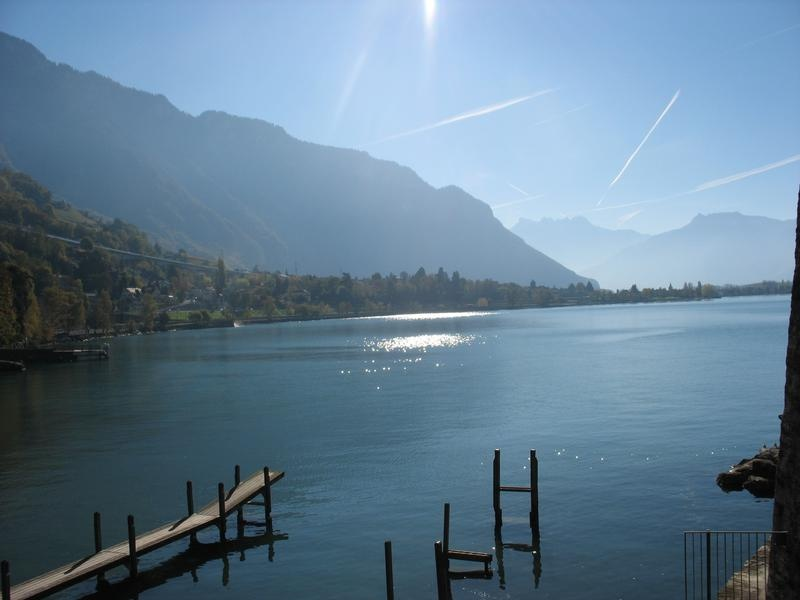
REFERENCE
James Hays, Alexei A. Efros. Scene Completion Using Millions of Photographs. ACM Transactions on Graphics (SIGGRAPH 2007). August 2007, vol. 26, No. 3.
Codes from Project 2 and Project 3.
GIST descriptor by tuttieee from Github